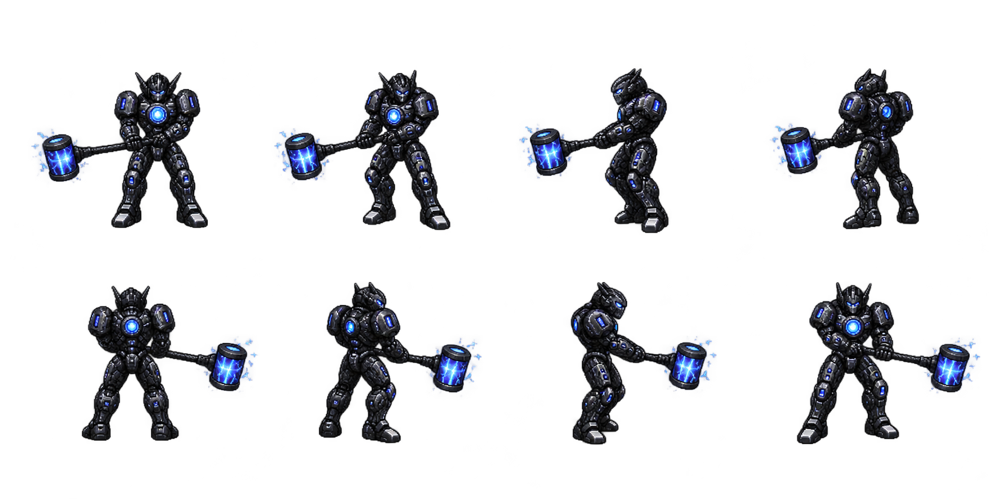

Chronos — original two-handed spin
The original HAMMER/HAMA whirlwind: both hands grip the shaft as his body turns. The body, hands and hammer remain together in every frame.
Focused Furious review with invulnerability and game audio. Each labeled segment starts a spin checkpoint; the fight then runs normally. Red armor is selected for comparison here—the live fight still charges into rage at 15% HP.
Inspect the grip through the complete turn
RegularChromiumRed rage
The original authored reference
These are the eight original whirlwind views used by HAMA. The restored spin retains these complete poses; chromium and red change the armor palette.

Open the updated game · Other current animation banks